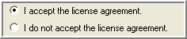

Running the Installer
If you are doing an upgrade, use your existing license-key.xml and installer.xml files by placing them in the same directory as the installer program (the unzipped Novell Teaming kit). If you are doing a new installation, use your license-key.xml by placing it in the same directory as the installer program. The license-key.xml file required to install the product is provided with the software kit (but is not included in the kit).
NOTE:You can edit the installer.xml file directly and run the installer’s Reconfigure option to reconfigure Novell Teaming. See A Sample installer.xml File.
-
Run the installer (on Linux, do a chmod +x installer-liferay.linux to make the installer executable).
The installer is named one of the following according to your operating system:
-
installer-liferay.exe
-
installer-liferay.linux
NOTE:On Linux, you can run a console-based version of the installer (has all the same options as the GUI-based installer) using the following command:
installer-liferay.linux -console
-
-
In the window, select the procedure you want to perform, then click :

-
Use this option to perform an initial installation of Novell Teaming. The rest of this procedure walks you through an advanced initial installation to show show you all the available options.
-
Use this option to perform an upgrade of an existing Novell Teaming application.
-
Use this option to reconfigure an existing Novell Teaming application.
-
-
Read the license agreement, select theoption to indicate your acceptance of this agreement, then click .
 -
In the window, select the type of installation you want to perform, then click :

-
: Use this option if you are do not need to configure any optional features.
-
: Use this option if you need to configure any of the optional features.
-
-
In the window, use the associated buttons to change the default location for the installation or file system:

-
If you need to change the locations of any of the file system components, select from the drop-down list to activate the buttons for these components, make the neccessary changes, then click .

-
In the window, click if you need to change the default for this data, then click .

-
In the window, specify the network values for how you want Novell Teaming to appear on the network. See Network Planning.

-
In the window, configure your databases and select whether or not to create the databases during install. The database server you select must already be installed.
If your DBA created the databases by hand (required for Oracle), select the option. For more information, see Database Planning.

To configure your databases:
-
Select the database from the drop-down list.
-
Enter your , , and for the icecore and Liferay databases, then click .
-
-
In the window, click to select the directory location (if not detected automatically), type in the value if you require more than the default 1 G (use a small “g” with no spaces), then click .

-
In the window, edit the fields to configure the Lucene index.

To run the Lucene index as a server, select from the drop-down list, type in the , and edit value if the default port cannot be used.

You can run the Lucene as a server from the same system as Novell Teaming or from a remote system. You need to install the Standalone Lucene Index Server before running Novell Teaming. See Installing a Standalone Lucene Index Server.
-
In the window, edit the fields to configure the Novell Teaming RSS feeds, or deselect the option to disable RSS feeds, then click .

RSS feed URLs: Because RSS readers are outside of the authentication system, the URL provided by Novell Teaming for an RSS feed embeds some authentication information about the user. This means that the RSS URL must be protected and not shared between users.
For this reason, RSS is not recommended for use on highly sensitive data.
-
In the window, edit the fields to configure your outbound e-mail settings. Outbound configuration requires the basic information for generating SMTP mail messages: server, port, and optional authentication information.
The field is the address used for any e-mail notifications generated by the system. This name is also used for authenticated access to the SMTP server. To support e-mail sent by users, either the Novell Teaming server or the authenticated user must be authorized to use different addresses.
For more information, see the “Mail Setup” section of the .

-
In the window, edit the following fields to configure your inbound e-mail settings, then click .
For inbound mail (postings) you need to specify either or ( or for SSL connections to mail servers) from the drop-down list. These settings are not used until you enable incoming e-mail in Novell Teaming.

Novell Teaming posting uses real or alias e-mail addresses in your folders, according to whether you select the option:
-
When you use aliases for posting, the system accesses a single e-mail account (posting account). Novell Teaming routes e-mail from this account to individual folders based on unique e-mail addresses (aliases) which are assigned to individual folders and mapped to the posting account.
-
When you use real e-mail addresses for each folder, you need to create multiple posting accounts using your normal e-mail system management tools. Each posting e-mail address is used for a single folder.
Create the posting accounts using your normal e-mail system management tools. Novell Teaming needs a host, port, e-mail account ID, and password for the posting feature to work.
-
-
In the window, select the option to link your Novell Teaming and Conferencing servers together. You need to obtain the values for the following fields from an installed and configured Conferencing server. If you do not know these values now, you can run the installer’s option to add this information later. Click to continue.

-
In the window, select to use the iChain Single Sign-on Support (SSO), set the Logoff URL to the address used to trigger an iChain logoff, set the IP address of the iChain Proxy server, then click .
Only transactions from that address and the localhost are allowed. For more information, see Integrating with iChain.

-
Mirrored folders are local/shared directories that are exposed within Novell Teaming. You must configure the directories here before they are available in Novell Teaming. For security reasons the set of people who can map Novell Teaming folders to these shared directories should be limited.
There are three mirrored folder types:
-
file - for normal file systems
-
webdav - for WebDAV servers that support basic authentication
-
sharepoint - for Microsoft Sharepoint WebDAV access
NOTE:Mirrored Folders are available only in the Enterprise Edition.
A mirrored folder is a Novell Teaming folder that uses a server file system directory as its file storage area instead of the normal Novell Teaming repository. Typically the directory is a file share, accessed via normal file sharing mechanisms. Novell Teaming attempts to keep its knowledge about the folder contents in sync with whatever is in the directory.
Because of the way mirrored folders are configured, they are intended to bring common (relatively static) file shares into the Novell Teaming environment. They are not appropriate for individual file shares. You can use Novell Teaming to add additional metadata around these files, including Novell Teaming-specific access controls.
The following fields specify the mirrored folder resource drivers. These drivers then make the files in the specified directory available to the Novell Teaming folders. It is important to note that the Novell Teaming process accesses the directories and that the user ID for Novell Teaming acts as a proxy for all Novell Teaming users.

If you need more than three mirrored folders, you need to edit the installer.xml file directly and run the installer’s option. For more information, see the “Configuring Mirrored Folders” section in the Novell Teaming Administration Guide.
Click to continue.
-
-
In the window, click to begin the installation or use the button to review the current configuration of the installer.